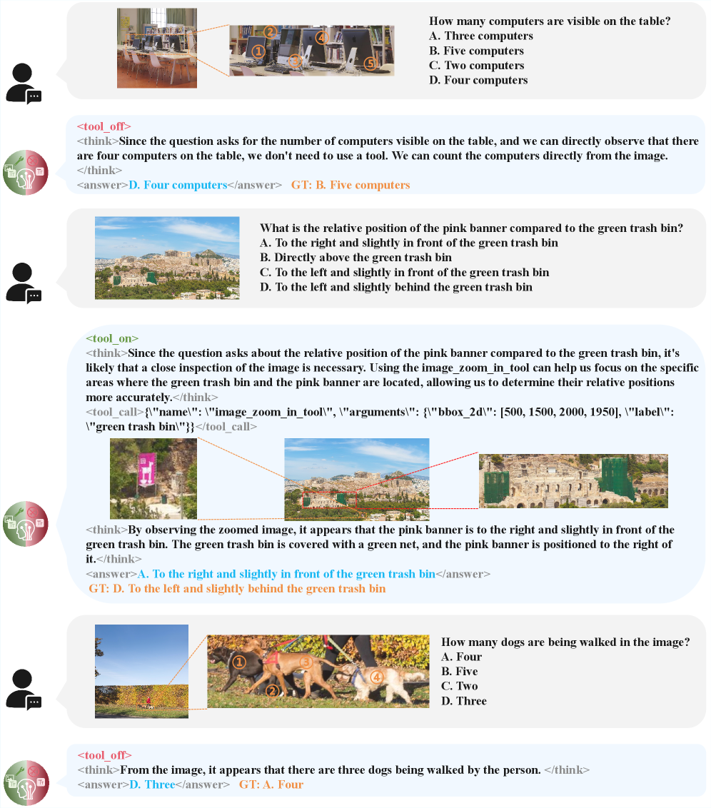
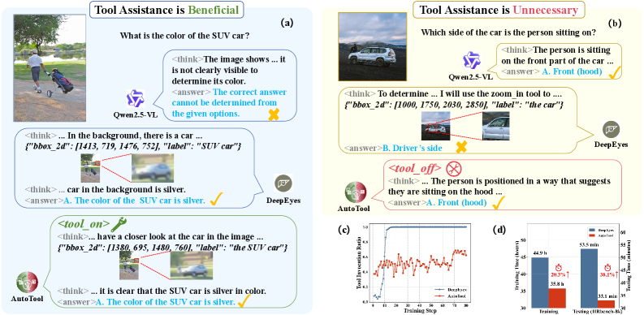
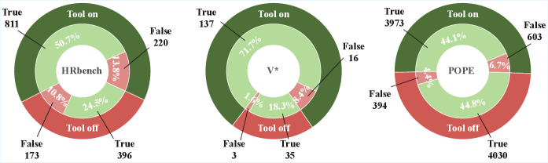
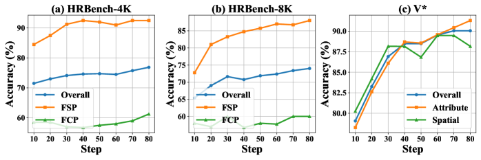

AutoTool challenges the assumption that tool usage is always beneficial by introducing adaptive, dual-mode reasoning that improves both accuracy and efficiency in multimodal LLMs.
本文挑战了“工具使用总是有益”的假设，提出AutoTool框架，通过强化学习中的双模式推理策略，让多模态大语言模型根据查询自适应决定是否调用工具。实验表明，该方法在V*基准上准确率提升21.8%，在POPE基准上效率提升44.9%，有效平衡了精度与计算开销。
Deep Note — autotool
Key Takeaways - Tool invocation is not always beneficial; redundant or inappropriate tool use increases overhead and can mislead predictions. - AutoTool adaptively decides whether to invoke tools per query using a dual-mode reasoning strategy within a reinforcement learning framework. - Mode-Specific Policy Optimization (MSPO) applies distinct reward functions for tool-assisted and text-centric reasoning modes. - Adaptive Mode Balancing (AMB) prevents premature bias toward a single mode by dynamically adjusting reward coefficients during training. - AutoTool achieves 21.8% accuracy gain on V* benchmark and 44.9% efficiency improvement over existing tool-augmented methods on POPE.
0) Metadata
- Title: Are Tools Always Beneficial? Learning to Invoke Tools Adaptively for Dual-Mode Multimodal LLM Reasoning
- Alias: autotool
- Authors: Qinghe Ma, Zhen Zhao, Yiming Wu, Jian Zhang, Lei Bai, Yinghuan Shi
- arXiv ID: 2605.19852
- Published:
- Links:
- Abs: https://arxiv.org/abs/2605.19852
- HTML: https://arxiv.org/html/2605.19852v1
- PDF: https://arxiv.org/pdf/2605.19852
- Tags: tool-augmented-reasoning, multimodal-llm, reinforcement-learning, adaptive-invocation, efficiency
- Domains: ai_safety, system_safety
- Rating: 4/5 (base 1 + quality 2 + observation 1)
1) Why-read
AutoTool challenges the assumption that tool usage is always beneficial by introducing adaptive, dual-mode reasoning that improves both accuracy and efficiency in multimodal LLMs.
2) CRGP
C — Context
Multimodal large language models (MLLMs) have advanced chain-of-thought reasoning, but existing tool-augmented methods like DeepEyes and OpenThinkIMG force tool invocation for all queries, leading to high computational costs and potential hallucination. Reinforcement learning has been used to teach tool usage, but prior work neglects the necessity of invoking tools adaptively.
R — Related work
- DeepEyes (Zheng et al., 2025) uses fixed tool invocation orchestration, consistently encouraging tool use regardless of task difficulty.
- OpenThinkIMG (Su et al., 2025b) relies on inadequate reward designs, leading to unnecessary multi-turn reasoning.
- Multimodal CoT (MCoT) approaches (Zhang et al., 2025; Wang et al., 2025a) inject visual context but increase training/inference costs.
- Reinforcement learning for tool acquisition (Shao et al., 2024; Guo et al., 2025; Chen et al., 2025) focuses on how to invoke tools, not whether to invoke them.
G — Gap
Existing tool-augmented reasoning methods for MLLMs assume tool invocation is always beneficial, leading to redundant or inappropriate tool use that increases reasoning overhead and can mislead predictions. They lack a mechanism to adaptively decide when tool assistance is truly necessary based on query characteristics.
P — Proposal
AutoTool introduces a dual-mode reasoning strategy within a reinforcement learning framework, using special tokens
---
4) Experiments
Main results
AutoTool achieves a 21.8% accuracy gain on V* benchmark compared to the base model, and a 44.9% improvement in efficiency over existing tool-augmented methods on POPE benchmark. DeepEyes requires 44.9 training hours, 20.3% more than AutoTool's adaptive invocation.
Ablation
Adaptive Mode Balancing (AMB) is critical: without it, the model biases toward the
Limitations
['The approach is evaluated primarily on zoom-in tool scenarios; generalization to other tool types (e.g., search, external models) is not fully explored.', 'The dual-mode strategy may still struggle with queries that require partial or sequential tool use across multiple reasoning steps.', 'The reward design for tool-assisted mode penalizes incorrect tool use but may not fully capture subtle cases where tool use is partially helpful.']
5) Why it matters
- Directly addresses the efficiency-accuracy trade-off in tool-augmented MLLMs, relevant for deploying models in resource-constrained environments.
- Provides a principled framework (MSPO + AMB) for adaptive tool invocation that can be extended to other tool types and reasoning tasks.
- Highlights the overlooked issue of unnecessary tool use causing hallucination, which is critical for building reliable multimodal systems.
6) Next steps
- [ ] Test AutoTool on a broader set of tools (e.g., search engines, external vision models) to validate generalizability.
- [ ] Explore multi-step adaptive tool invocation where the model decides tool use at each reasoning step.
- [ ] Apply the dual-mode RL framework to other domains like robotics or autonomous driving where tool use decisions impact safety.
- [ ] Investigate the impact of AMB on training stability and convergence in larger-scale MLLMs.
7) Scoring
4/5 = base 1 + quality 2 + observation 1
Deep Note — AutoTool：工具总是有益的吗？学习自适应调用工具以实现双模式多模态大语言模型推理
主要结论 - 工具调用并非总是有益，冗余或不恰当的工具使用会增加开销并误导预测。 - AutoTool通过强化学习框架中的双模式推理策略，自适应地决定每个查询是否调用工具。 - 模式特定策略优化（MSPO）为工具辅助模式和纯文本推理模式分别设计不同的奖励函数。 - 自适应模式平衡（AMB）通过动态调整奖励系数，防止训练过早偏向单一模式。 - AutoTool在V*基准上取得21.8%的准确率提升，在POPE基准上相比现有工具增强方法效率提升44.9%。
1) 阅读理由
AutoTool挑战了“工具使用总是有益”的假设，通过自适应双模式推理同时提升多模态大语言模型的准确率和效率。
2) CRGP（背景 / 相关工作 / 差距 / 方案）
上下文：多模态大语言模型（MLLM）在链式推理上取得进展，但现有工具增强方法如DeepEyes和OpenThinkIMG对所有查询强制调用工具，导致高计算成本和潜在幻觉。强化学习已被用于教授工具使用，但先前工作忽视了自适应调用工具的必要性。相关工作：DeepEyes使用固定工具调用编排，始终鼓励工具使用；OpenThinkIMG依赖不充分的奖励设计，导致不必要的多轮推理；多模态CoT方法注入视觉上下文但增加训练/推理成本；强化学习获取工具的研究关注如何调用工具，而非是否调用。差距：现有工具增强推理方法假设工具调用总是有益，导致冗余或不恰当的工具使用增加推理开销并可能误导预测，缺乏根据查询特征自适应判断工具必要性的机制。提案：AutoTool在强化学习框架中引入双模式推理策略，使用特殊标记
3) 实验
AutoTool在V*基准上相比基础模型准确率提升21.8%，在POPE基准上相比现有工具增强方法效率提升44.9%。DeepEyes需要44.9训练小时，比AutoTool的自适应调用多20.3%。
消融实验
自适应模式平衡（AMB）至关重要：没有它，模型会偏向
局限性
['该方法主要在缩放工具场景下评估，对其他工具类型（如搜索、外部模型）的泛化性尚未充分探索。', '双模式策略在处理需要跨多个推理步骤部分或顺序使用工具的查询时可能仍有困难。', '工具辅助模式的奖励设计惩罚了错误的工具使用，但可能无法完全捕捉工具使用部分有益时的微妙情况。']
4) 重要性
- 直接解决了工具增强MLLM中的效率-精度权衡问题，对资源受限环境下的模型部署具有实际意义。
- 提供了自适应工具调用的原则性框架（MSPO + AMB），可扩展到其他工具类型和推理任务。
- 揭示了不必要的工具使用导致幻觉这一被忽视的问题，对构建可靠的多模态系统至关重要。
5) 下一步
- [ ] 在更广泛的工具集（如搜索引擎、外部视觉模型）上测试AutoTool，以验证其泛化能力。
- [ ] 探索多步骤自适应工具调用，让模型在每个推理步骤决定是否使用工具。
- [ ] 将双模式强化学习框架应用于其他领域（如机器人、自动驾驶），其中工具使用决策影响安全性。
- [ ] 研究自适应模式平衡（AMB）对更大规模MLLM训练稳定性和收敛性的影响。
![Figure 2 : Illustration of the AutoTool training framework. Given a multimodal problem, the policy model first decides whether the subsequent reasoning process requires tool invocation. For each batch of generated reasoning trajectories, different reward functions are applied to evaluate the trajectories under distinct reasoning modes via the Mode-Specific Policy Optimization (MSPO), and the tool invocation reward coefficient is estimated through the Adaptive Mode Balancing (AMB) strategy. The model is optimized via the GRPO.](figures/1173/fig_002.png)



